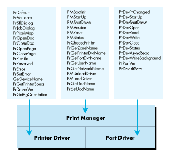
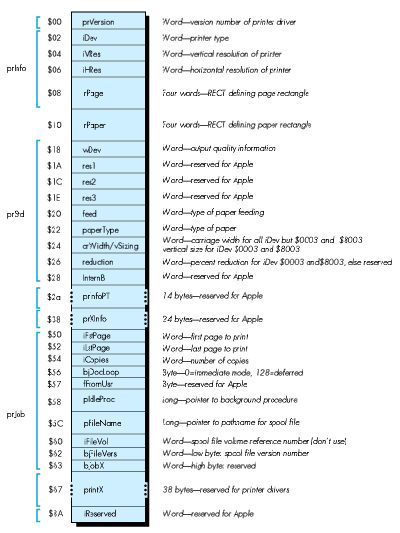
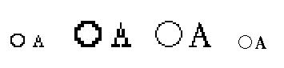

Do you have a printer that would print awesome text and graphics if only someone
would write a driver for it? Have you looked at the driver specifications and become
hopelessly confused? If you want to give your Apple II GS some expanded printing
capabilities, don't put this issue down until you've read this article!
In theory, printer drivers seem like a great solution. All you have to do is drop a
printer driver file in your Drivers folder, and all of a sudden you'll be able to create
dazzling text and graphics from whatever desktop application and on whatever kind of
printer you happen to use with your Apple IIGS. No more writing to printer
manufacturers or waiting for application upgrades to support your printer.
Unfortunately, the reality isn't quite as nifty as the theory. Even though Apple released
printer driver specifications in early 1988 (just before System Disk 3.2), only a
few third-party printer drivers have surfaced. The specifications are complex and
sometimes confusing, and they have not always been accurate. Most of all, printer
drivers are intrinsically complicated and difficult to develop. The driver has to do all
of the work in getting images printed, with no imaging help from the Print Manager.
This article explains the mysteries of the printer driver: what it does, how it does it,
and how to write one. To illustrate the concepts, we've provided a sample printer
driver called Picter. Picter takes the image to be printed and saves it to your boot disk
as a QuickDraw II picture file. Picter allows you to literally print a graphic document
to disk. Much of Picter's structure and code is directly applicable to any printer
driver. What's more, the dialog routines in Picter, which are very similar to those in
the new ImageWriter and ImageWriter LQ drivers released with System Software
5.0.3, will enable you to be consistent and stylish in your user interface. You will find
Picter in the IIgs Printer Driver folder on the Developer Essentials disc.
Printing from a desktop application appears to be a black box. You make some Print
Manager calls and voila!-- there's a piece of paper with a printed image of what you
drew. The Print Manager uses some serious magic to turn your image into ink on
paper, but that's all hidden from the application.
So now that we know what we're getting into, let's briefly review how applications
print through the Print Manager.
WHAT THE APPLICATION SEES
In the Apple IIGS desktop environment, documents are kept in windows, which are
extended versions of the QuickDraw II drawing environment--the Grafport. The
features defined by theGrafport include where drawing will and will not occur, what
size pen will be used to draw lines and other objects, what method will be used to draw
them, what colors and patterns will be used with the objects drawn, what style, size,
font, and colors will be used for text drawing, and where the image resides in memory.
The model for printing is quite similar to drawing in a window. Instead of drawing into
a windowGrafport, your application draws into aprinting Grafport, which defines
the drawing environment for a single page. The clipping and visible regions
(theclipRgn and visRgn) are set to the rectangular area of the page, for example.
An application prints by drawing into a printingGrafport, which it obtains by opening
a printing document with the Print Manager callPrOpenDoc. The Print Manager
responds by returning a printingGrafport in which the material to be printed should
be drawn. The printingGrafportis initialized at the beginning of each new page
(signified byPrOpenPage). The application then draws the page, closes it
(withPrClosePage), and repeats this sequence until all pages have been printed. The
application then closes the document (withPrCloseDoc) and prints any images the
driver may have spooled withPrPicFile. The sequence of calls starting
withPrOpenDoc and ending withPrPicFile is referred to as theprint loop , since the
middle calls (PrOpenPage andPrClosePage) are repeated once for each page to be
printed. Note thatPrPicFile should always end the print loop.
HOW IT REALLY WORKS
If the Print Manager does all this for the application, as the Apple IIGS Toolbox
Reference says it does, where does a printer driver fit in?
To understand how printer drivers work, you first need to realize that the preceding
description of how applications print is exaggerated. Everything listed above as done
by the Print Manager is really done by the currently selected printer driver. Although
the calls are Print Manager calls, the only action the Print Manager takes on these
calls is to make sure the printer driver is available and to dispatch the calls to the
driver. The application model says this work is done by the Print Manager to prevent
application dependency on any particular driver. From the application's point of view,
the Print Manager's role in printing allows the application to be independent of any
particular driver. But in reality, your printer driver will handle all the work
associated with several of these "Print Manager" calls.
While at first it might seem like a cop-out by Apple to require the printer driver to
handle all the work in the print loop, this strategy actually makes a lot of sense. The
printer driver must ultimately transform images into ink on paper, so for maximum
flexibility Apple has given the printer driver control over the entire imaging process,
from the opening of a document to the printing of spooled images. Since no one but the
printer driver author knows what user-selectable features the driver will support,
the printer driver should be responsible for the style and job dialog boxes through
which these features will be chosen. And because the printer driver knows how to best
handle internal errors, it's a good idea to make it responsible for returning and
accepting error codes from the application.
Although the printer driver has to handle all the imaging, the Print Manager does
provide a lot of support for other parts of the printing process. One of the tasks the
Print Manager supports is communication--once an image has been converted into
printer codes, the codes have to be sent to the printer. The Print Manager keeps track
of a different kind of driver--the port driver --that handles this communication
with the printer through the internal ports of the Apple II GS (or through the
slot-based peripherals). The port driver essentially relieves the printer driver of the
work of communicating with the printer. All the printer driver has to do is ask the
port driver to read or write data to the printer, and the port driver handles all the
details. The Print Manager also keeps track of which printer and port drivers the user
has chosen with the Control Panel desk accessory.
Figure 1 shows the relationship of the printer driver and the port driver to the Print
Manager. The Print Manager handles some duties alone while passing others directly
through to the printer or port driver.
THE PRINT RECORD
Since the printer driver does all the interesting imaging work, it has to have some
way to exchange vital information with the application. Applications need to know the
size of the pages to be printed so that they can paginate properly. They may need to
know the vertical sizing factors so that better resolution graphics can be printed when
higher resolutions are available. Or they may need to know the resolution of the
printer for precise printing chores. This information is communicated through a data
structure known as the print record . The print record is associated with every
document to be printed, and it is the only way the printer driver can keep these
parameters associated with a document.

Figure 1 Print Manager Calls
Figure 2, on the next page, shows the print record in fully documented detail. Notice
that some fields are marked simply as reserved--that means reserved for Apple.
Using these fields is a really good way to make your application not print with other
drivers or to make your driver not work with future system software.
The print record contains all the parameters associated with a printing job. It
includes not only the page and paper sizes and the resolution of the printer and other
hardware parameters, but also the values selected by the user in the Page Setup and
Print dialog boxes, which are presented by the printer driver. The print record
contains all the information necessary to print a document the same way as many times
as necessary.

Figure 2 The Expanded Print Record
PRINTING MODES
In addition to being concerned about what to print, you must be concerned about the
way in which it's printed. There are two modes for printing. The differences between
these modes amount to two different models for printing.
Immediate mode. When you print in immediate mode, every page is printed as it's
defined. The driver does not store an image of the page before it sends it to the printer.
This strategy can limit the driver's options when printing a page. To see how, you first
have to understand how immediate mode works.
When QuickDraw performs a graphic operation, it calls a standard set of low-level
routines to do it--the QuickDraw bottleneck procedures. A pointer to them exists in
every GrafPort'sgrafProcs field, where a value of 0 means that QuickDraw should
use the standard procedures. This is briefly mentioned in Technical Note #35, but it is
covered in great detail in the note just preceding it: Apple IIGS Technical Note #34,
Low-Level QuickDraw II Routines.
To print in immediate mode, you install your own set of bottleneck procedures into the
printingGrafPort. When the application draws any object into the printing
GrafPort, QuickDraw calls your bottleneck routines to actually image that object.
Because immediate mode printing responds to object-drawing commands sent by
QuickDraw, immediate mode printing works best for target devices that handle similar
objects. For example, the LaserWriter has built-in PostScript code that can image
objects in much the same way QuickDraw does. The LaserWriter driver installs
bottleneck procedures that convert QuickDraw objects into PostScript objects and
sends them immediately to the LaserWriter, printing the page when the page is closed
with PrClosePage.
Unfortunately, most printers do not handle graphic objects. The graphics capabilities
of most printers are of the "print a dot of this color at this location" variety. To print
images to these devices, a driver has to convert the images into printer codes that
place the dots where they need to go. Doing this properly requires waiting until all
objects are drawn on the page before sending any codes to the printer. If you try to
image and print each QuickDraw object as it's drawn, you'll get the wrong results
when the application draws white pixels on top of previously colored pixels. (You will
also have to move the paper backward and forward enough to inspire demonic
possession stories.)
Because of this limitation, many dot-matrix printers ignore graphic objects when
printing in immediate mode, transforming only text drawing into simple ASCII text
printing using the printer's built-in font. Since this is not what you see on the screen,
immediate mode printing is often referred to as draft mode , even though immediate
mode printing can be of excellent quality on the right target device.
Deferred printing. Since immediate mode printing is not suitable for graphics on
many printers, most printing jobs will be deferred. In deferred or spool mode ,
everything that is drawn is captured to be printed later. Text is imaged together with
graphics to return as accurate a reproduction of the document as possible.
How the printer driver captures the image is entirely discretionary. If you like, you
can attach a pixel map large enough for the entire page to the printing GrafPort and
let the application draw the page into the pixel map. This method would give you a
premade pixel map, waiting for you to transform it into printer codes and send it out.
At screen resolution, however, a full U.S. letter-sized page would take just
over 56K of contiguous memory. That's per page--a 20-page document would require
20 such blocks. For this reason, most printer drivers (including Picter and Apple's
drivers) use QuickDraw pictures to capture the images. Pictures are an encoded
history of the QuickDraw calls used to create an image. When you play back a picture
using the QuickDraw auxiliary call DrawPicture, QuickDraw does all the drawing
necessary to recreate the image. Instead of taking 32K to store a screen-sized
rectangle filled with a given pattern, a picture stores the same information in the few
bytes that encode the pattern, the rectangle size, and the "paint" command.
Because pictures contain recorded QuickDraw II objects, they can be redrawn at
different resolutions or in different proportions with excellent results. If you call
DrawPicture with a destination rectangle of a different size than the one the picture
was recorded with, QuickDraw's picture algorithms are capable of changing the sizes
and proportions of every object in a picture to match the changed destination rectangle.
This intelligent scaling behavior makes pictures perfect for the needs of most printer
drivers. Since most printers are capable of screen resolution that is better than that
of the Apple IIGS (80 pixels per inch horizontally by 36 pixels per inch in 640
mode), some kind of scaling will be necessary to create screen resolution images at the
proper size regardless of resolution changes. For example, to achieve an image of the
proper size when your target device supports 160 dpi horizontally by 72 dpi
vertically, you'll need two printer pixels in each direction to represent one screen
pixel.
Simply magnifying each screen pixel to be the appropriate number of printer pixels
gives the image the right size, but the resolution is still the same as the screen's. To
get better resolution, QuickDraw's picture algorithms are a good choice. For our
sample target device that supports 160 dpi horizontally by 72 dpi vertically, your
driver could call DrawPicture to image the stored page-picture in a rectangle twice
as large as was used to record the picture. QuickDraw will then draw all the objects in
the picture at twice their original resolution. Your driver can translate the resulting
pixel map into printer codes at one screen pixel per printer pixel. The end result is a
printed image with the same physical size as the original screen image but with a
resolution twice as great.
Take a look at Figure 3. In Figure 3a, we show a circle and the letter A drawn at
screen resolution. In Figure 3b, the same image is magnified, pixel by pixel, to about
twice its normal size. It doesn't look any better, just bigger. However, if we have these
objects in a picture, we can use DrawPicture to draw them at twice their normal
size. The picture algorithm redraws the objects with increased resolution instead of
simply magnifying existing pixels. The increased resolution allows QuickDraw to draw
a much smoother circle (since the screen has the same resolution, but the circle has
twice the radius) and a smoother-looking A since we use a 16 point font instead of an 8
point font. (Rather than drawing the font recorded in the picture and scaling the image,
QuickDraw calls the Font Manager to get the best available font for the destination.
Requesting a larger font size often returns a custom-designed font strike from disk,
making a marked improvement in the appearance of text at higher resolutions.) The
results of the picture scaling are shown in Figure 3c. Figure 3d shows Figure 3c
scaled down to actual size.

Figure 3 A Demonstration of Picture Scaling vs. MagnificationOf course, if you want
to draw objects at three times their normal size, you probably won't be able to draw
an entire page at once. You can, however, draw them into a printing GrafPort with
the clipping region set to a small rectangle of the picture. If you divide the page into
ten such "bands," you only need one-tenth the memory the entire page would need. You
just have to callDrawPicture ten times to complete printing for the page.
This technique is referred to asbanding and is done by most printer drivers in deferred
mode to work even in low-memory conditions. To image a full 8 1/2 by 11-inch page
at three times resolution would require 506K per page (56K at normal resolution
magnified by three horizontally and by three vertically), but dividing it into 20 bands
requires only 25K per band--and the band buffer is reusable. Dividing it into 51
bands requires under 10K per band. Since applications are instructed not to
callPrPicFile if a 10K buffer isn't available (see Volume 1 of theApple IIGS Toolbox
Reference , pages 15-30), you can always use a 10K buffer and you may be able to use
a much larger one if memory is available. You'll have to divide it into 102 bands if
vertical condensed mode is selected, since that doubles the vertical resolution.
The drawback to this method is that it's slow. QuickDraw can't know before
interpreting the stored picture operations which ones will be clipped out and which
will actually be drawn, so it spends a lot of time drawing the 50/51sts of the page that
don't show up each time. If there are a lot of fonts on the page, the Font Manager spends
time installing versions of them three times larger than the original, which in turn
takes a lot of memory and makes things even slower. Generally, the more memory you
can use for the band buffer, the faster printing will go. The fastest method would be to
get the entire page imaged at once, but that's not always feasible.
The printer driver author has to create a set of routines that can accurately reproduce
a graphic image on the printer or other reproduction device--FAX modem, graphic
language device, and so on. Besides this article, you'll need information from a range of
sources to write a good driver.
GrafPort, you have to be able to manipulateGrafPorts and their clipping components. To print in deferred mode, you have
There is a standard physical structure for printer drivers to follow so that the Print
Manager can perform its dispatching properly.
A printer driver begins with two zero bytes and a count of the number of routines the
driver supports. The Print Manager will transform the call number into a
precomputed index for a four-byte per entry jump table, and put this index in theX
register. Thus an indirect indexed jump, jmp(driverTable,X), will call the routine.
Note that each jump table entry is four bytes long, but a jmp(driverTable,X)
instruction will only use the low word of each entry. This requires all your entry
points to be in the same segment. To get around this, you can have a short entry
segment that JSLs to routines in other segments. If you like, you can rewrite the
entry code to use all four bytes of the address instead of the low two. Just remember to
preserve the X register, as it's your only indication of which routine to call.
The entry point for the driver is at the fifth byte (just after the function count). Note
that before September 1990, Technical Note #35 always had the table entries for
PrPixelMap and PrDriverVer backward, and that PrGetPgOrientation was
misspelled in the note. Also, the count of routines should be 17. A correct driver
header looks like this:
DriverStart START
dc i2'0' ; identifying word
dc i2'(ListEnd-PrDriverList)/4' ; count
EntryPoint jmp (PrDriverList,x)
PrDriverList dc a4'PrDefault'
dc a4'PrValidate'
dc a4'PrStlDialog'
dc a4'PrJobDialog'
dc a4'PrDriverVer'
dc a4'PrOpenDoc'
dc a4'PrCloseDoc'
dc a4'PrOpenPage'
dc a4'PrClosePage'
dc a4'PrPicFile'
dc a4'InvalidRoutine'
dc a4'PrError'
dc a4'PrSetError'
dc a4'GetDeviceName'
dc a4'PrPixelMap'
dc a4'PrGetPrinterSpecs'
dc a4'PrGetPgOrientation'
ListEnd anop
On entry to each routine, the stack looks just as it would for a Toolbox call. There are
two RTL addresses, then any parameters, and finally any result spaces. The Print
Manager dispatches to printer driver routines without adding any information to the
stack, so you can imagine that the Tool Locator dispatches directly to your driver
routine when a printer driver call is made.
Your entry code must be reentrant. Because the Print Manager will call some of your
routines when you make port driver calls (likeGetDeviceName when a port driver is
first loaded), be sure you have no reentrancy problems.
The physical structure of printer drivers is the only constant thing about them. You
can implement the rest of the driver in any way you choose, using resources, dynamic
segments, and even multiple files. When you consider using other components like
these, however, keep in mind that loading any of them may require users to insert the
boot disk. Even if you make your resources have the preloadattribute, most
resources used by the system, like window and control templates, are released when
the Toolbox is done with them. Marking them preload means the user won't have to
insert the disk to use those resources the first time, but once they're released they're
very likely to go away. You can get around this by loading the resources yourself and
passing them to the Toolbox as handles instead of as resources--in which case
preload resources work very well indeed.
In addition to the physical structure, there is a standard logical structure that printer
drivers should follow so that printing actions are consistent from printer to printer.
The driver consists of three functional parts: calls that do the printing loop, routines
to maintain and access the print record, and other stuff--the few routines that don't
fit either of the other categories.
PRINT LOOP ROUTINES
The printing routines will be called by the application to make printing happen. The
application just opens a document, opens some pages, draws, closes the pages and the
document, and whenPrPicFile is called, printing just kind of happens. The printer
driver is what makes it happen.
Although the printing routines are described fairly well in Technical Note #35, the
following summary highlights the most important points about using these routines.
PrOpenDoc. PrOpenDoc is the beginning of the regular print loop. This is where
you create (if necessary) and initialize the printingGrafPort for the application to
draw pages into. You should also make sure to validate the print record, since it
contains the settings you must use to image this document. If you want a "Preparing
data" dialog box, this is the place to display it. Before you exitPrOpenDoc, you should
have allocated most of the resources you'll need to print (memory, disk space, and so
on).
PrOpenPage. PrOpenPage is the application's way of telling you "I'm going to draw
into thisGrafport to image the next page." You get to initialize the Grafport to be
ready for printing, including setting the clipping regions to the size of the page
rectangle (or the rectangle passed toPrOpenDoc, if there is one), and to make the
printing Grafport the current one, saving the old port. If you're printing in
immediate mode, you should install your bottleneck procedures in theGrafport here
with the QuickDraw II call SetGrafProcs.
PrClosePage. PrClosePage undoes whatever it was thatPrOpenPage did. Close the
picture for this page here (or eject the page if you are printing in immediate mode).
Be sure to restore the oldGrafport(from PrOpenPage) before returning.
PrCloseDoc. PrCloseDoc similarly undoes what PrOpenDoc did. If PrOpenDoc
allocated a new printing Grafport, PrCloseDoc must dispose of it (after making
sure it's closed so you don't orphan any region handles). You should close the printing
Grafport with the QuickDraw II call ClosePort. (It's not a port driver call, no
matter what Note #35 says). You should also erase the dialog box you drew in
PrOpenDoc, presuming you drew one.
PrPicFile. PrPicFile does nothing if you're in immediate mode, but it does nearly
everything if you're in deferred mode. Given the model of recording pages in pictures,
the instructions described in Note #35 are pretty good--they lead you through the
process one step at a time.
There's one very important part of most printer drivers that's not covered by the
note--imaging. The process of turning pixel images into printer codes is so dependent
on the target device that neither this article nor the note can tell you how to do it.
However, there are a few strategies that apply to all printer drivers:
DrawPicture calls makes printing faster. The best way to MaxBlock
The status record is a method the application has of communicating with your printer
driver, since printing can take such a long time. The job subrecord contains a pointer
to a procedure to be called during idle time--that is, the time between pages, bands, or
copies. If you're passednil for theStatusRecPtr, it's probably easier for you to
allocate a status record yourself and update it as if it were provided by the application.
Be sure to dispose of everything you've allocated during printing before leaving
PrPicFile. Although the application should make all the print loop calls in order, if
an error occurs inside one of the calls (or if the application calls PrSetError), the
rest of the print loop must handle it gracefully and still deallocate all allocated
resources at the end of PrPicFile.
PrPixelMap. PrPixelMap takes an arbitrary pixel map and prints it. You're passed
a QuickDrawlocInfo structure (the pixel map defining portion of a Grafport), a
rectangle enclosing the portion of the Grafport to print, and a flag indicating whether
to use color. PrPixelMap is a quick and dirty way to print graphics without going
through the print loop.
Your imaging code should have a routine to print an arbitrary pixel map anyway, and
PrPixelMapcan just call it. Alternatively, as suggested by Technical Note #35, you
can allocate a new print record, make a picture that contains just the pixel map, and
call your normal deferred printing routines.
PRINT RECORD METRICS ROUTINES
The print record metrics routines set and get values in the print record. The print
record is the only way your driver can communicate with the application about
printing parameters, making it vitally important that the print record be correct.
Only you know if the values in the print record make sense, so you get to check it for
consistency. You also get to present the most logical option choices to the user, since no
one else knows what they are. In addition, there's a new call for System Software 5.0
and later that lets you return the page orientation so that applications don't have to go
reading the print record.
PrDefault. This routine copies the default print record into the supplied handle. The
default print record's contents will vary depending on the current screen resolution.
Be sure not to set the handle size on this handle. Some applications keep extra stuff
beyond the end of the record. This isn't kosher, but leaving the print record handle size
unchanged is an easy work-around to a potential problem.
PrValidate. PrValidate checks a supplied print record for consistency. If any of
the values are inconsistent or invalid, you should correct them. If the supplied print
record isn't a print record from your driver, you should fill it with the default values.
PrStlDialog. PrStlDialog is responsible for the dialog box the user sees after
choosing the Page Setup command in the File menu. You should initialize the controls in
the dialog box based on the print record and save all the changes from the dialog box in
the print record (if the OK button was pressed, of course).
PrJobDialog. PrJobDialog is responsible for the Print dialog box. As with the
Page Setup dialog box, no one but your driver knows the best options and their default
choices for your printer.PrJobDialog should initialize the iCopies field in the job
subrecord to 1, iFstPage (thefirst page to be printed) to 1, and iLstPage (the last
page to be printed) to the largest value your driver allows. By setting these values,
you ensure that one copy of each page is printed if the user does not change these items.
That's how the human interface should work.
PrGetPgOrientation. PrGetPgOrientation returns a 0 for portrait (small side
on top) mode and a 1 for landscape (sideways) mode. No one cares where you store this
in your print record, just return it here. For print records with iDev values $8001
and $8003, you must store this information in the wDev field.
MISCELLANEOUS DRIVER SUPPORT
There are a few routines involving port driver communication, printer identification,
and internal functions that you get to provide as well.
PrError. You maintain an internal error code for your printer driver. This is so
that if PrOpenDocreturns an error, you can look at the error code and do nothing for
the rest of the print loop.PrError simply returns your internal error status.
PrSetError. PrSetError sets your internal error status to the supplied value.
This call allows anGetDeviceName. GetDeviceName is also known as
PrChanged--it's called by the Print Manager when your driver is first loaded. This
routine takes the AppleTalk Name Binding Protocol or NBP- format name of your
target device and passes it to the port driver routine PrDevPrChanged. This allows
the network port driver to communicate with your target device over the network. If
you don't have a network-compatible target device, pass nil to PrDevPrChanged. An
example of an NBP-type name can be found in Picter.
PrDriverVer. PrDriverVer returns your driver's version number, so that
applications can scope out your driver for features. If you document features that are
available in a given version of your driver, this is how other code can find out if that
version is here or not.
PrGetPrinterSpecs. PrGetPrinterSpecs tells the caller things about your
driver without forcing any monkeying around with the print record. Your driver gets
to return its iDev value identifying the kind of printer or style subrecord and the
characteristics of the target device. Currently, the only defined characteristic is
whether or not you're color capable. This stuff is defined for all existingiDev
drivers, but it's good to keep people out of the print record anyway.
Picter is a very simple driver. It creates QuickDraw pictures of all the pages and
saves them as picture files in the *:System:Drivers directory. (Picture files have the
file type $C1, auxiliary type $0001.) The first file is named screen.a, and the last
letter is incremented for each additional file until a pathname syntax error occurs.
Picter does not support many print record options. It prints only in color, portrait
mode, full size. Picter has an iDev of $8001, so it interprets the style subrecord as
the ImageWriter driver does. If someone sets a bit in the print record to an invalid
value, Picter's PrValidate routine corrects it.
Picter is intended to be a working sample that shows the structure and content of a
printer driver. It is a learning tool, not a release-quality utility. No printer driver
with this many interface holes should see the light of day as a finished software
product.
Picter is written in APW/ORCA assembly and uses the Make utility by 360
Microsystems for source code file management. If you don't have the Make utility, you
can look in the make file to see the commands to build each of the components and the
link order.
THE WORLD ROUTINES
To ensure that our driver has a consistent environment, Picter includes a few
environmental routines around every call and some at the main entry point.
Our entry point is the short, indirect jump, as we saw when we looked at the driver's
physical structure earlier. This is acceptable because all of our entry points are in the
same segment. Before making the jump, we call the environmental routine
MakeOurWorld.
Because there are no printer driver startup and shutdown calls, some people have
wondered how printer drivers can obtain direct-page space and release it.
MakeOurWorld is a way to do this. It relies on the fact that when printer drivers are
unloaded, they are not marked as restartable. Every time the driver is reloaded, we get
a fresh copy of the driver from disk. So we link in a storage word of zeros, allocate our
direct-page space, and store the address of this space in the zero word. Then on every
entry, we just check that word. If it's zero, we were just loaded from disk, so we go get
the direct-page space again. If the word isn't zero, it's our direct-page space:
transferring it to the direct- page register after saving the current value sets our
direct page.
We give the direct-page memory the same user ID as the driver. Thus when our driver
is unloaded, the direct-page memory is likewise released. If you don't need static
direct-page space, by all means don't allocate any. If you use the application's existing
stack frame instead of allocating the new direct-page space, you can conserve bank
zero space. However, since allocating direct-page space is a little trickier, a solution
is included inMakeOurWorld.
MakeOurWorld returns with the accumulator zero and the carry clear if everything
was right. If the accumulator is zero and the carry is set, we were just loaded and our
direct page is not initialized. If the accumulator is nonzero and the carry is set, there
was a real error.
Immediately in every subroutine, Picter puts the number of bytes of input parameters
in the Yregister and calls CheckTheWorld. If there was a real error,
CheckTheWorld callsEndOurWorld to get out of the printer driver with the error
code. If there was no error,CheckTheWorld quickly returns to the caller.
EndOurWorld removes the saved values of the direct-page and data bank registers we
pushed on the stack in MakeOurWorld. On entry, X contains an error code or the
value $FFFF to indicate the internal error code should not be changed. The Y register
contains the number of bytes of input parameters to pull. The routine that removes the
input parameters is quite generic and is very similar to those used in the Toolbox's
common exit routines.
PICTER'S METRICS ROUTINES
Because Picter is limited in its scope and abilities, its actual printer driver calls
function slightly differently than they would in a full-blown printer driver. Here's a
description of how Picter implements the standard print record metrics routines.
PrDefault. PrDefault does nothing more than copy a linked-in default print record
to the handle passed as input. It then fixes the rPage and rPaper rectangles to match
the current screen resolution.
PrValidate. PrValidate examines the print record values Picter knows about to
make sure they match the values we support. If they don't, they are modified to be
supportable and consistent.
PrStlDialog. PrStlDialog calls the ConductStyleDialog routine to do the actual
Page Setup dialog box. The dialog routines call several very small subroutines in
Picter to read the print record values. ConductStyleDialog never accesses the
print record itself. This is an example of a method of print record management that I
prefer.
PrJobDialog. PrJobDialog is very much like PrStlDialog in that it calls one of
the dialog routines to conduct the dialog, and those routines call us for information on
the print record.
PrGetPgOrientation. PrGetPgOrientation returns the value for page orientation
out of the supplied print record. It reads the values directly, although it could call a
metrics subroutine just as easily.
PICTER'S PRINT LOOP ROUTINES
These routines are Picter's implementation of the routines that do the actual printing.
PrOpenDoc. The actual print loop itself is also slightly unorthodox, due to the nature
of the target device (QuickDraw picture files).
PrOpenDoc sets up a printing Grafport, validates the print record, and displays a
small status message dialog box. It also initializes other printing parameters, like the
internal error and page number variables.
PrOpenDoc stores variables on direct page, making it very bad if the driver were to
become unloaded before PrPicFile. Since MakeOurWorld lets us check for this
easily, we return a new error if it happens. The error is defined as $13FF and the
equate is PrBozo. Any meaning this equate has is the interpretation of the reader.
PrOpenPage. PrOpenPage checks to make sure our direct page is still around and
returnsPrBozo if not. If all is well, we increment the page number and check the job
subrecord to make sure this page is one we're supposed to be printing. If it is, we
initialize the printing Grafport to contain rectangular clipping and visible regions
the size of the rPage rectangle (or of the supplied frame rectangle, if any). We
update the status dialog box and call our subroutine OpenPICTFile, which creates the
new picture file, opens it, and opens a QuickDraw picture for recording the page
images.
PrClosePage. PrClosePage calls ClosePICTFile, which closes the picture,
writes it to disk, and kills the picture. We then close the printing Grafport, update
the status dialog box, and return. (None of this happens if the driver was just loaded.
The caller gets PrBozo instead.)
PrCloseDoc. PrCloseDoc disposes of the memory for the printing Grafport if it
was allocated byPrOpenDoc. We restore the old Grafport, close the status dialog box,
and exit.
PrPicFile. PrPicFile doesn't really do anything in Picter. We do all our actual
"printing" in the page routines, but our job record indicates that we are in deferred
mode for compatibility with applications that don't think they print in immediate
mode. Nevertheless, Picter shows how to do several of the more common PrPicFile
actions, like setting up a status record, allocating and initializing a new Grafport for
imaging the pages, calling the idle procedure in the job subrecord, and displaying the
status dialog box.
PICTER'S MISCELLANEOUS ROUTINES
These routines are Picter's implementation of the routines that make your driver
complete. They allow your driver to respond to requests for error, network, and
version information.
PrReserved. PrReserved is the name we picked for what Note #35 calls
InvalidRoutine. It is, in fact, the remnants of an old Print Manager architecture
call named PrControl. This had varying parameters and was generally not Your
Friend. To be safe here, we return error $0002, which as a Tool Locator error
indicates to the caller that he should pull his parameters back off the stack.
PrError and PrSetError. PrError returns the value in our internal direct-page
error location.PrSetError takes the value and puts it in our error location on direct
page.
GetDeviceName (PrChanged). GetDeviceName really has no meaning for us,
since our target device doesn't (and can't) exist on an AppleTalk network, but an
NBP-type string is included anyway to demonstrate the technique. This will cause the
network port driver to report that no devices of our type are available.
PrDriverVer. PrDriverVer returns the version word for our driver. You might
want to stop in the middle of writing your PrPicFile call to write PrError,
PrSetError, andPrDriverVer just to remind yourself that it's not always that hard.
PrGetPrinterSpecs. PrGetPrinterSpecs returns our iDev word and the color
capabilities of this printer (picture files are always in color). If you need to check
your target device's capabilities (for example, an ImageWriter doesn't always have a
color ribbon in it), this is the place to do it.
WHAT YOU CAN ADD
Picter is intended as a workbook, a shell from which you can learn printer driver
technique. There are many more things you can do with it before starting your own
printer driver. By examining these areas now--before you actually try to implement
them in a driver--you will avoid future frustration.
More picture types. Picter writes only QuickDraw picture files as supplied. You
could add a pop-up "Picture type" menu to the job dialog box and allow the user to pick
any of the popular graphics formats. Apple Preferred is a good choice because its
line-oriented structure makes it a good candidate for banding. Banding will be
necessary unless you have a pixel map large enough to hold the entire image at once.
Other easy additions are packed QuickDraw pictures and 32K screen dumps (if you can
get a 32K block for the pixel map). Remember that screen files aren't 32K of
pixels--they're 32,000 bytes of pixels and 768 bytes of scan-line control bytes and
color tables.
More page types. As supplied, Picter only supports two types of page
metrics--screen size and U.S. letter size. Try adding more sizes (legal, label,
envelope). The code to handle different page metrics is directly applicable to any other
printer driver. In fact, you could add line edit controls to let theuser type the size of
the page rectangle in inches or centimeters and thus have no limit to the number of
paper sizes you support.
Communicating with the port driver. Picter doesn't communicate with the port
driver (except inGetDeviceName). Try writing the name of each call to the port
driver as it executes. If you have an ASCII printer connected to the hardware controlled
by the port driver, you should get a hard copy of each call name as it executes. You
could also write debugging information this way, such as parameters or print record
addresses.
More options. You can also add more standard print record options--such as
condensed and landscape modes--to Picter. Supporting landscape mode involves
swapping the horizontal and vertical coordinates of the rPage and rPaper rectangles
as well as the horizontal and vertical printer resolutions--just be sure your
validation routines know how to deal with it! You can make vertical condensed mode
happen by passing a rectangle that is half the correct height of the framing rectangle
for OpenPicture. Other reduction values, both horizontal and vertical, come by
changing the framing rectangle for DrawPicture as well.
Printing doesn't have to be a big mystery. The task is divided into components so that
no one part of it becomes insurmountable. Turning imaging into printer codes is the
responsibility of the printer driver, talking to the hardware is the responsibility of
the port driver, and the Print Manager holds it all together. While supporting
different printers and interfaces would normally be beyond the scope of most
applications, the Apple IIGS printing architecture makes it easy for applications. All
you need is a printer driver--and now you know how to create those as well.
Volume 1 of the Apple IIGS Toolbox Reference does a good job explaining most of the
fields in the print record, but it contains some incomplete information. One such
omission occurs in the Reference's description of the iDev field. The iDev field
identifies the kind of printer. The Reference lists two values for this field--
ImageWriter and LaserWriter--which leads to problem code in applications such as
the following:
if PrintRecord.iDev = 1 then
{It's an ImageWriter}
else
{It's a LaserWriter}
endif
In reality, there are at least six defined values for iDev:
$0001 ImageWriter
$0002 ImageWriter LQ
$0003 LaserWriter
$0004 Epson
$8001 Generic dot matrix printer
$8003 Generic laser printer
The $8001 and $8003 iDev values are provided for generic compatibility. If a
driver has an iDev of $8001, it interprets the style subrecord of the printer record
as is documented for the ImageWriter driver. If the iDev is $8003, it interprets the
style subrecord as it would for the LaserWriter driver.
Unfortunately, because this is the only device identification field present in the print
record, there is no way to uniquely identify printers assigned to these values. For
instance, suppose you have two printers with printer drivers in your system--the
GlopJet and the ImageStamper. Both drivers use an iDev of $8001. Applications are
encouraged to save print records with documents so that the user's print settings are
maintained across sessions. If you open a document with a print record created by the
GlopJet driver but your currently selected printer is the ImageStamper, the
ImageStamper driver will be passed the print record and asked to validate it. The
ImageStamper driver looks atiDev and sees $8001, and it has no other way to know
that this print record is not an ImageStamper record.
Drivers with uniqueiDev values don't have this problem. For example, the
LaserWriter driver knows that if the iDev value isn't $0003, it's not a LaserWriter
print record and should be filled with default values.
Apple's Developer Technical Support group will assign new iDev values to printer
driver authors if neither the $8001 or $8003 interpretation of the style subrecord
is suitable, but you must be aware that some applications will not work with other
formats of style subrecords. It's better for compatibility purposes to support one of
the existing style subrecord formats if possible.
For instance, some applications don't like to let the user choose items that don't work
very well. If an application doesn't print very well without color, it might do
something unfortunate like set the "color" bit in the wDev field before starting the
printing loop. If the driver doesn't support color printing, it will catch this error in
the PrValidate routine and may reinitialize the print record with default values. If
the driver author is lucky, the application will first check the iDev field to make
sure that the "color" bit is supported in the style subrecord. If you're really lucky,
the application will call PrGetPrinterSpecs and keep out of the print record
altogether. Many applications just blast the bit.
WHAT DRIVERS AND APPLICATIONS SHOULD DO
To keep your handling of the print record kosher, there are a few things you should
keep in mind.
First of all, since print records are associated with printing jobs, it would be nice to
keep all parameters that go with a printing job in the print record. But since a field is
either defined or reserved, it's not clear where you can put a new parameter. If your
printer has 14 different internal fonts and you want the user to choose one of them,
where can you put that information?
Apple has set aside the 38 bytes in the print record labeled printX for printer
driver use. Nonstandard parameters and values can go there. This area is left to the
discretion of the printer driver. It will always remain a miscellaneous storage area,
no matter what Apple does with it in drivers it develops, and its interpretation will
not depend on the iDev field. In other words, if the LaserWriter driver stores a
parameter there, drivers with $8003 iDev values are not expected to do the same.
Applications absolutely must not tamper with the printX subrecord nor try to
interpret any items in there. Applications have most of memory for parameters, while
printer drivers only get these 38 bytes in the print record. Applications, keep out.
It's also important that neither drivers nor applications alter the print record fields
marked reserved for Apple--in particular the prInfoPT and prXInfo subrecords.
Older versions of Apple's drivers stored a private copy of the prInfo subrecord in
prInfoPT (PT stands for "private"). Discovering this fact, some applications used
this copy instead of the original. Since this feature was never documented, however,
relying on it is likely to make your application not work with other drivers. As for the
prXInfo subrecord, it may be defined in the future for the storage of parameters
between spooling and printing (betweenPrCloseDoc and PrPicFile).
Apple's printer drivers have dominated the print driver development environment.
This dominance has discouraged the creation of third-party drivers, which has in turn
made a bad situation worse. Since there are few drivers other than Apple's to test with,
applications tend to do unsavory things with drivers because they're expedient. Since
applications do unsavory things, developers who want their drivers to be backward-
compatible with applications tend to disassemble the Apple drivers to figure out what
to do. Since everyone does unsavory things, the system winds up in an unusable and
unmaintainable state because no one wants to rock the boat.
THE IMAGEWRITER DRIVER
Of all Apple's drivers, the old (pre-5.0.3) ImageWriter driver has caused the most
headaches. The main problem with this driver is that it's a hybrid. Long ago, the
structure of the Print Manager was quite different from what it is today. The Print
Manager had "high-level drivers" and "low-level drivers." High-level drivers would
communicate with the application, and low-level drivers would do the actual imaging
or communication tasks. You will still see evidence of these things in some printing
discussions. The giveaway is usually the abbreviations HLD for high-level driver and
LLD for low-level driver.
When the Print Manager architecture was changed to its current design, the
ImageWriter driver was converted-- not rewritten as it should have been. The
conversion created a lot of source files and put nearly every routine in a place where
you wouldn't expect to find it. As new features were added, the entire thing became
more and more unwieldy, until at last Ben Koning broke from the beast by creating a
new, vastly improved ImageWriter driver for System Software 5.0.3 (with some
imaging routines by Apple II GS graphics wizard Jason Harper).
The Print Manager has a few features in it for the questionable use of the old
ImageWriter driver. These have never been documented and now that the old
ImageWriter driver is going away, these features may go away as well. If you have
ever disassembled the driver (not kosher according to the license agreement anyway),
you may have discovered some of these less-than-desirable programming practices:
printGrafPortPtrs were passed where
WALKING A THIN LINE
All of this leads to the question of how you will write your driver: will you create your
driver strictly by the book, or will you program defensively in an attempt to work
with those who broke the rules? If you use only the defined print record fields and stay
clear of undocumented structures, your driver will work fine with future versions of
the Print Manager and most applications. On the other hand, if you don't support the
unorthodox use of the print record, your driver is less likely to work with some of the
bigger and more widely used Apple IIGS applications.
The scariest thing about continuing to support these structures is that it gives
application authors no reason to stop using them. For practical reasons, it may be
impossible to avoid using some of these undocumented structures. Keep in mind,
however, that the less of this you can get away with, the better off everyone will be in
the long run.
Included with our sample printer driver are some dialog box routines from Ben
Koning, the guy behind the new ImageWriter and ImageWriter LQ drivers. Ben has
spent a lot of time creating drivers that are more powerful, faster, and easier to
maintain so we can add more features in the future. Our thanks to Ben for sharing his
routines, which have been slightly modified for use in this driver. If you ever see Ben
around, buy him something really expensive--like a house, or a few cars, or a hot dog
at the average trade show.
By using these routines, you can easily make your style, job, and status dialog boxes
appear like those in Apple's printer drivers. Users will be less confused, everything
will seem to fit together better, and the world will be a happier place.
There are two types of dialog boxes in these routines--status dialog boxes and
interactive dialog boxes. The status routines make it very easy to keep the user
informed during the printing process. There are three status dialog routines--one to
display the empty dialog box, one to show a message in this box, and one to close the
box:
StartStatusMessage draws a small, blank dialog box centered on the StatusMessage takes a pointer to a Pascal string in a direct-page FinishStatusMessage closes the dialog box and removes it from the StartStatusMessage at the beginning of PrPicFile, and every StatusMessage with a descriptive FinishStatusMessage before returning to
There are also two other specific dialog routines that our sample driver does not use.
StatusMesgFeedPromptfills the status dialog box with the string "Insert sheet for
page: XXXXX", where you pass the page number necessary as an integer on direct page.
NotCorrectDevDialog displays a small box with a Cancel button that indicates that
this is not your target device.
StatusMesgFeedPrompt must be called between StartStatusMessage and
FinishStatusMessage, but NotCorrectDevDialog can be called at any time.
The style and job dialog boxes are largely defined by the controls in them.
ConductStyleDialog andConductJobDialog each have predefined templates linked in
as data. This way, you can avoid the disk-insertion problems that resources and
dynamic segments entail. The item IDs are equated to match values in the print record.
Picter shows how you can write the standard metrics routines to use Ben's dialog box
routines.
MATT DEATHERAGE used to think he was a cynic, but two and a half years in
Developer Technical Support for the Apple II has made him doubt even that. His
perpetual quest for sleep has been interrupted by his new responsibility for the
ProDOS partition on the Developer CD and Developer Essentials disc, as well as by his
resuming the role of DTS technical lead for Apple IIGS system software. It would be
enough to make his head spin, he says, "if my head were jointed that way." His musical
pursuits continue with work on an album, The Fruited Computer Follies of 1990,
which will never be released as all of the songs on it are entirely unsuitable for polite
company. He's currently conspiring with Robert Thurman to withhold the definition of
"PPG." *
For More Information
Apple IIGS Toolbox Reference , Volumes 1-3
Apple IIGS Technical Note #34, Low-Level QuickDraw II Routines
Apple IIGS Technical Note #35, Printer Driver Specifications
Apple IIGS Technical Note #36, Port Driver Specifications
Apple IIGS Technical Note #51, How to Avoid Running Out of Memory
Apple IIGS Technical Note #72, QuickDraw II Quirks
Apple IIGS Technical Note #93, Compatible Printing *
Thanks to Our Technical Reviewers Pete "Luke" Alexander, Ben Koning, Suki
Lee, Jim Luther, and Dave Lyons *